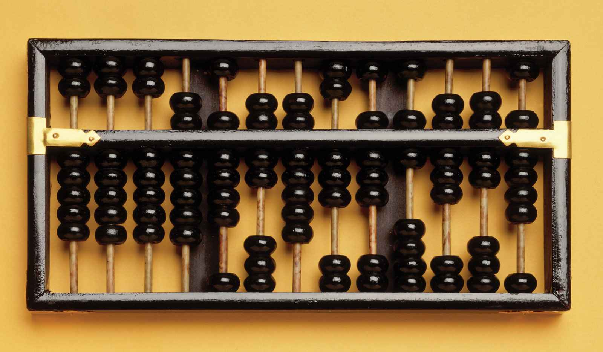
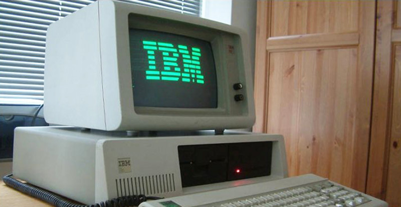

Evolução dos computadores:

Ao contrário da maioria das grandes invenções da história, o computador não tem um inventor. Essa máquina surgiu e vem sendo aprimorada desde a Idade Antiga, passando por um processo evolutivo tão expressivo quanto sua importância para a sociedade contemporânea.
Tudo começou na necessidade dos povos antigos de realizar contagens (computar = contar). Assim, quando se chegou ao momento em que tais contagens não poderiam mais ser feitas apenas com os dedos ou pedras, foram sendo arquitetados novos dispositivos que pudessem desenvolver cálculos sem maiores trabalhos.
Os aparelhos analógicos foram aprimorados até dar origem, enfim, aos aparelhos digitais, todos esses que utilizamos hoje. As máquinas continuaram a ser aperfeiçoadas, passando, agora, a serem divididas em gerações.

1946:
É anunciada a criação do primeiro computador digital eletrônico de grande escala do mundo, o
ENIAC (Electrical Numerical Integrator and Calculator).
O ENIAC começou a ser desenvolvido em 1943 durante a II Guerra Mundial para computar trajetórias táticas que exigiam conhecimento substancial em matemática com mais agilidade, mas só se tornou operacional após o final da guerra. O “sistema operacional” era através de cartões perfurados. A calculadora efetua os cálculos a partir das teclas pressionadas, fazendo interação direta com o hardware, como no ENIAC, no qual era preciso conectar fios, relês e sequências de chaves para que se determinasse a tarefa a ser executada. A cada tarefa diferente o processo deveria ser refeito. A resposta era dada por uma sequência de lâmpadas.
1959 a 1965:
Surgem os computadores de segunda geração, com capacidade de calcular com uma velocidade de microssegundos, sendo programados em linguagem montadora.
1965 a 1975:
Nascem os computadores da terceira geração. Esses computadores passam a ter diversos componentes miniaturizados e montados em um único CHIP, sendo capazes de calcular em nanossegundos, com uma linguagem de programação de alto nível, orientada para os procedimentos. 
1975 a 1981:
São criados os computadores da quarta geração. Seguindo a tendência da terceira geração de miniaturização de seus componentes e o aperfeiçoamento dos seus Circuitos Integrados (CI). As linguagens utilizadas nessa geração eram de altíssimo nível, orientada para um problema.